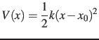

Next: Moving restraints: steered molecular Up: Biasing and analysis methods Previous: Compatibility and post-processing Contents Index
The harmonic biasing method may be used to enforce fixed or moving restraints, including variants of Steered and Targeted MD. Within energy minimization runs, it allows for restrained minimization, e.g. to calculate relaxed potential energy surfaces. In the context of the colvars module, harmonic potentials are meant according to their textbook definition: . Note that this differs from harmonic bond and angle potentials in common force fields, where the factor of one half is typically omitted, resulting in a non-standard definition of the force constant. The restraint energy is reported by NAMD under the MISC title. A harmonic restraint is set up by a harmonic {...} block, which may contain (in addition to the standard option colvars) the following keywords:
Tip: A complex set of restraints can be applied to a system, by defining several colvars, and applying one or more harmonic restraints to different groups of colvars. In some cases, dozens of colvars can be defined, but their value may not be relevant: to limit the size of the colvars trajectory file, it may be wise to disable outputValue for such ``ancillary'' variables, and leave it enabled only for ``relevant'' ones.